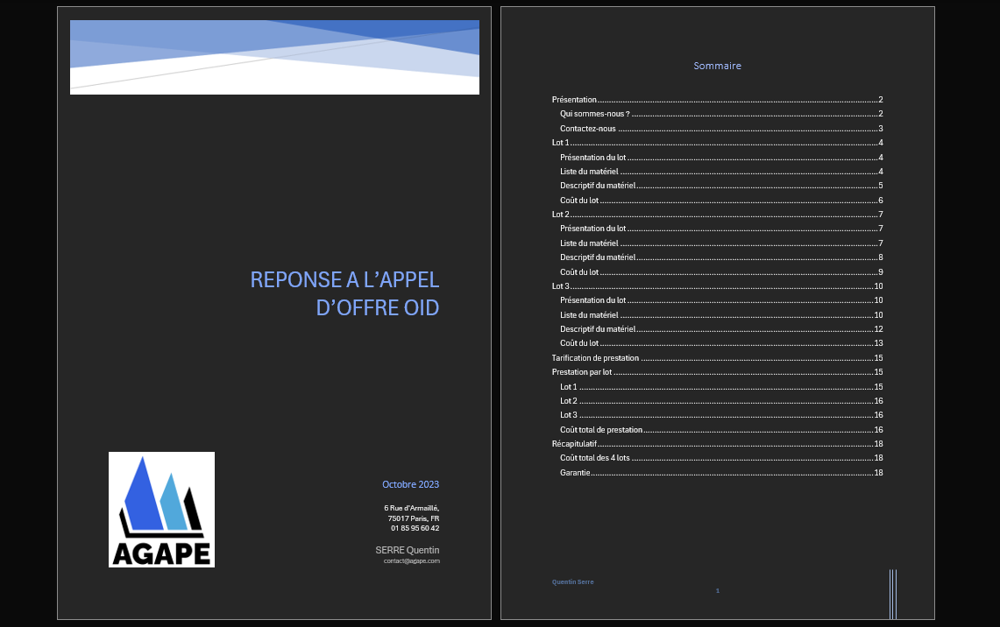
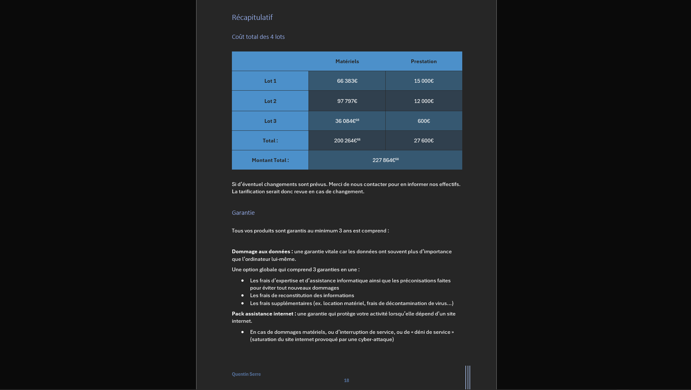

Appel d'offre IOD
Le but de se projet est de répondre à l'appel d'offre de l'Organisation internationale du Développement sous le nom d'une société fictive. L'appel d'offre comporte 3 lots comprenant différents besoins à subvenir, qu'il faut donc remplir tout en tenant compte du budget de l'entreprise et en calculant tout les frais d'achat et de prestations requis.
Déroulement du projet
- Prise de l'avis client
- Conception de l'appel d'offre
- Présentation au client
Gestion projet
- Récupération des besoins utlisateurs
Compétences & Outils
- Outils utilisés : Configurateur LDLC
- Compétences travaillées
- Analyse des besoins clients
- Conception de l'appel d'offre
Difficultés rencontrées
- Phase de recherche du lot 1
- Recherche de la carte mère correspondant aux caractéristiques demandées pour le lot 3
Bilan
Outre le fait que je me suis planté sur la configuration carte mère/processeur du lot 3.🙃 J'ai apprécié réaliser ce projet qui m'a permis de monter en compétences de par l'oral à réaliser et le compte rendu à rédiger en amont de celui-ci.



